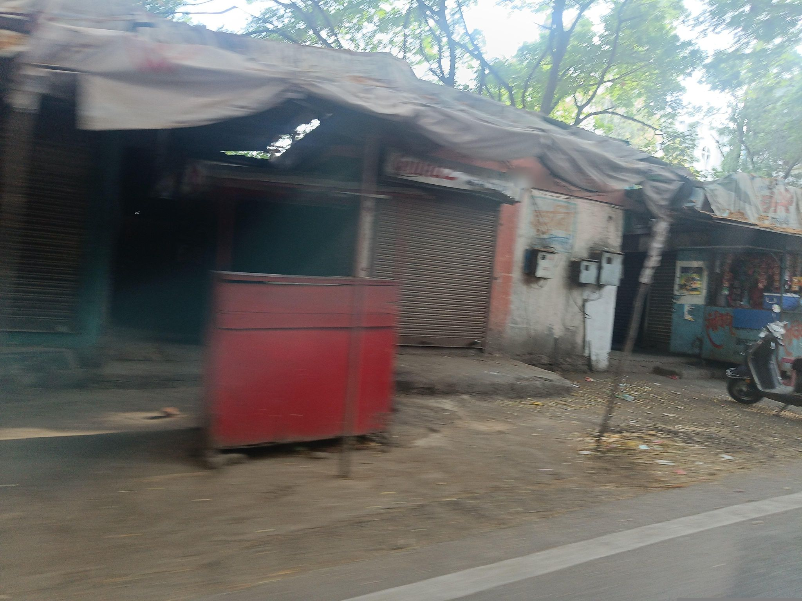
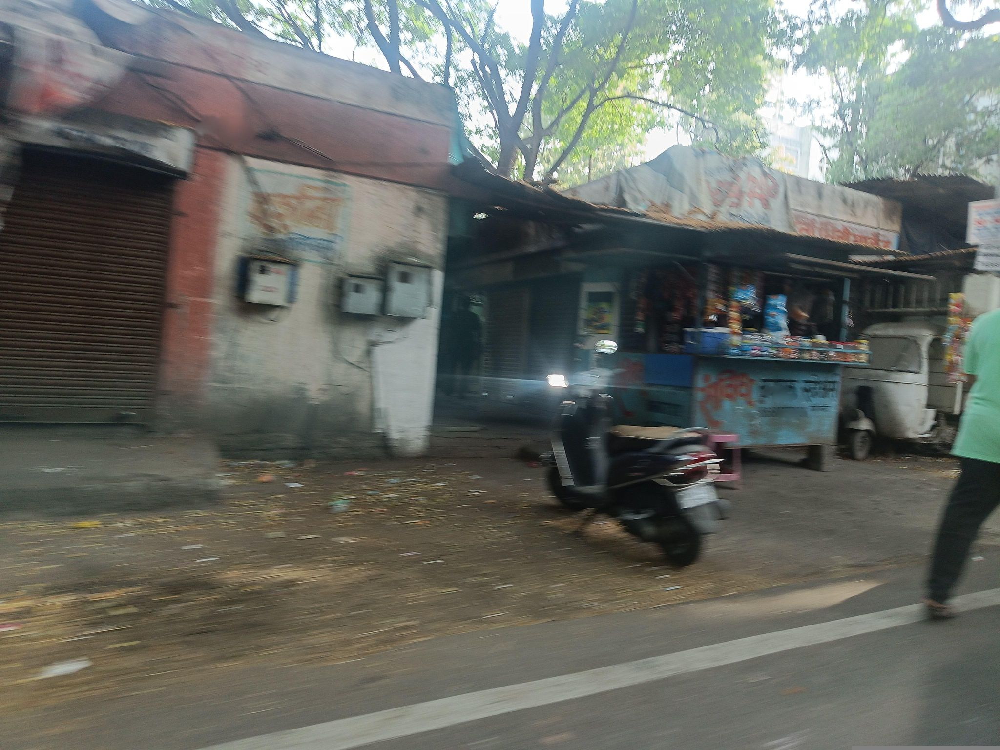
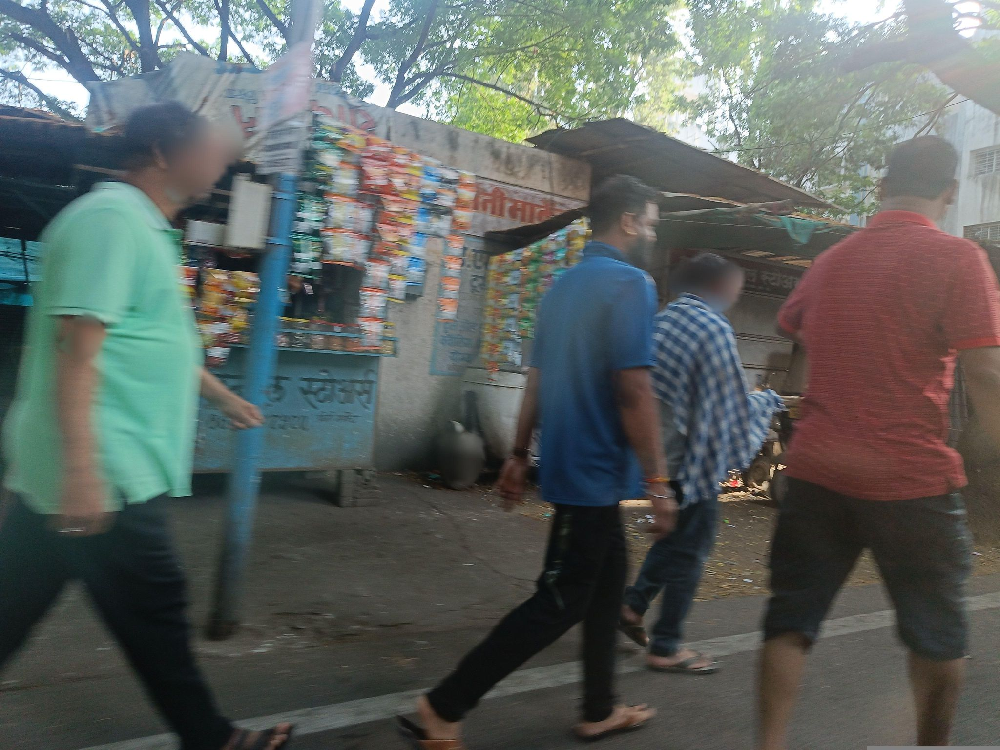
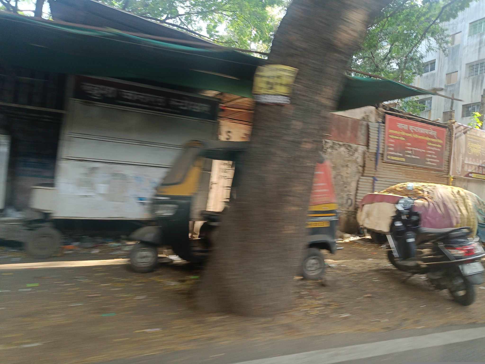
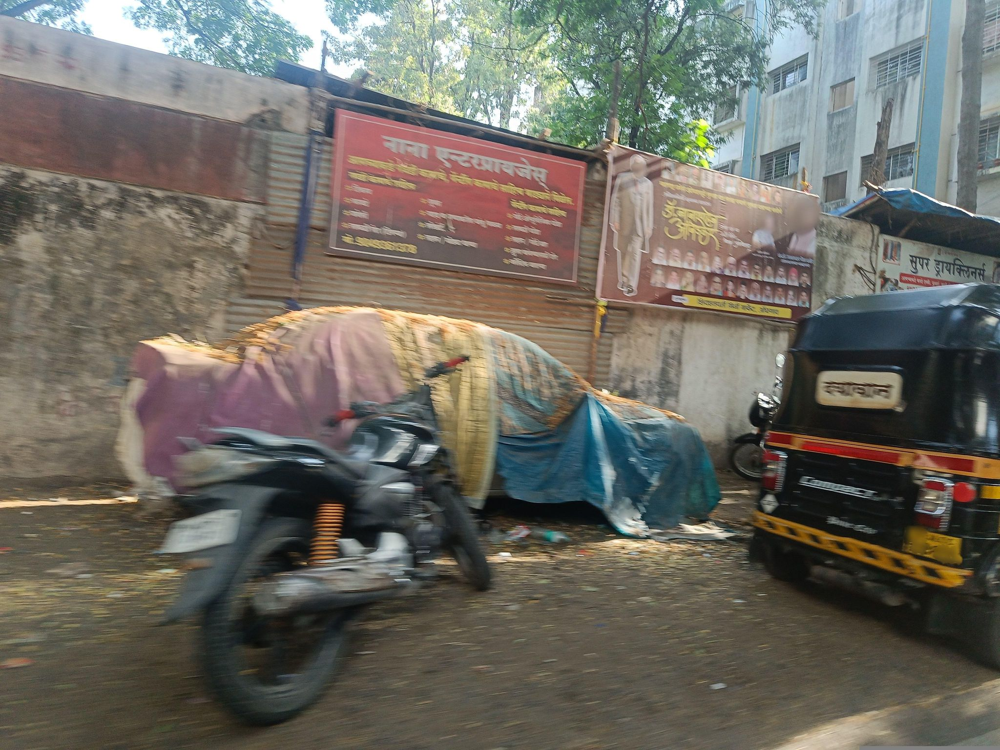
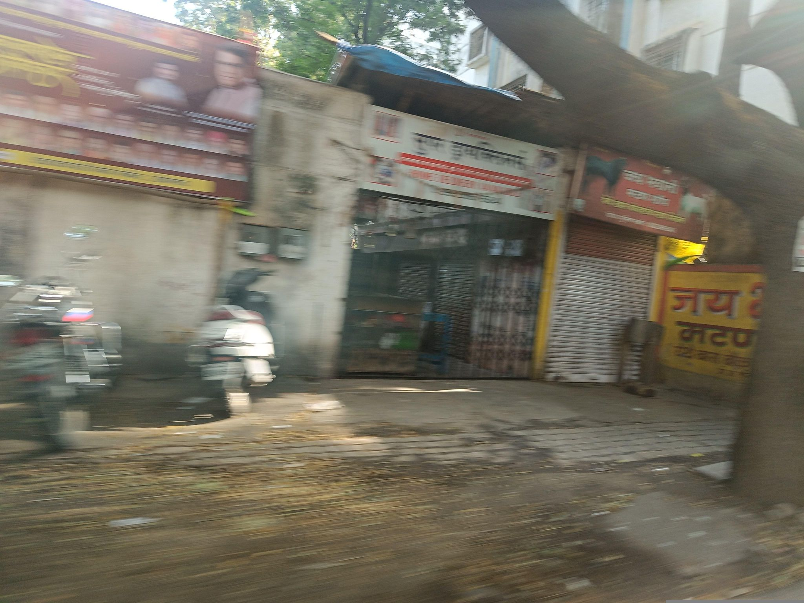
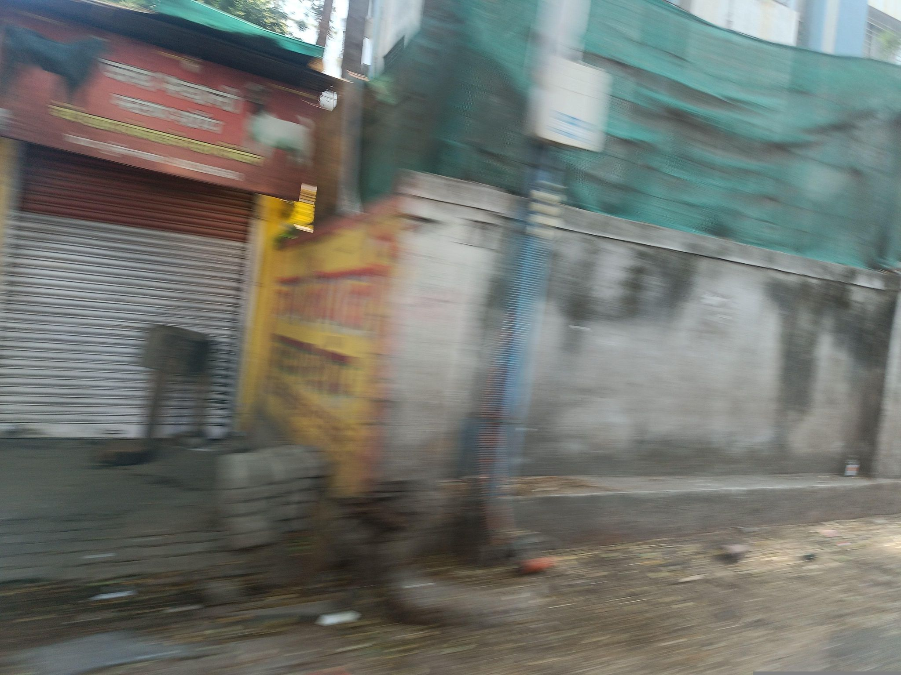
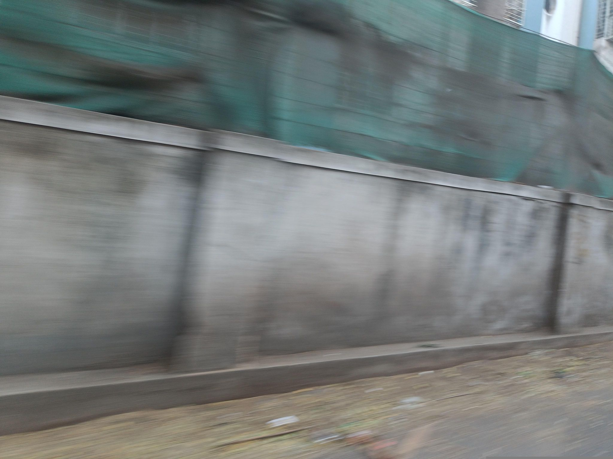
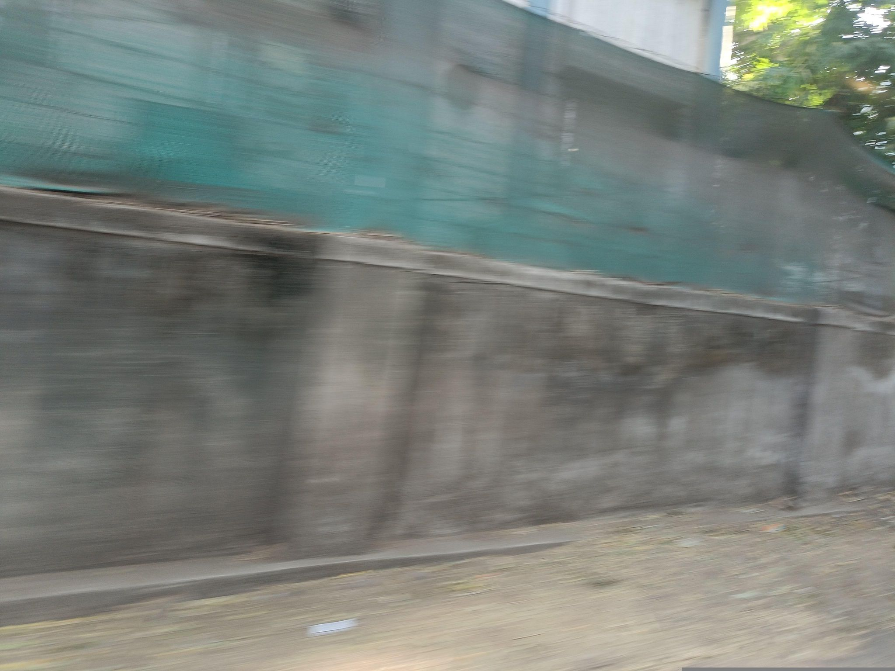

Unusable: image quality
1597642260928135
Frame 1 of 9. Motion-blurred side view of shuttered stalls and a red cart on dirt frontage; no target identifiable.
GEOCLEAN AI · MAPILLARY STREET-LEVEL METHOD V2
Nine consecutive side-window frames centred on sample 1387747582372489 (sequence Le2TjoQ1ms3uyCwfYOKGlR, 5 May 2025). The bundle is bamboo or straw material tied under tarps against a shed, not dumped waste. Five of the nine frames are motion-blurred.

Frame 1 of 9. Motion-blurred side view of shuttered stalls and a red cart on dirt frontage; no target identifiable.

Frame 2 of 9. Kiosk and parked scooter on dirt frontage with leaves and sparse scraps; no concentrated waste.

Frame 3 of 9. Pedestrians fill most of the frame in front of a kiosk; no target visible.

Frame 4 of 9. The tarp-covered bundle appears behind a scooter; loose litter lies near an auto-rickshaw and tree base, but it is dispersed.

Frame 5 of 9, the initial sample frame. Bamboo or straw material bundled under purple, yellow and blue tarps against a shed wall. The covered, tied shape reads as stored goods, not dumped waste; only scattered bottles and wrappers lie at its base.

Frame 6 of 9. Motion blur across a shuttered shopfront and gate; no target identifiable.

Frame 7 of 9. Motion blur along a wall with green netting; no target identifiable.

Frame 8 of 9. Heavily blurred wall and netting; no target identifiable.

Frame 9 of 9. Heavily blurred wall and netting; no target identifiable.